These are some images of my experience conducting fieldwork for my book "The politics of drug violence". The more recent (since 2019) are from fieldwork for my new book project on negotiations between State and criminal groups.
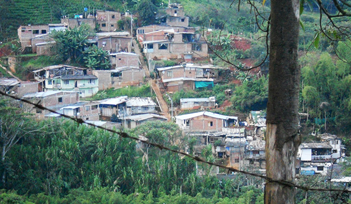
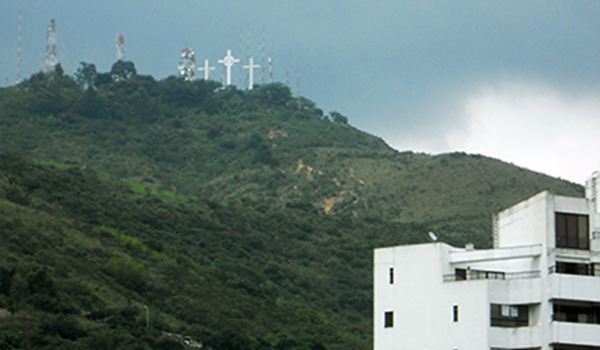
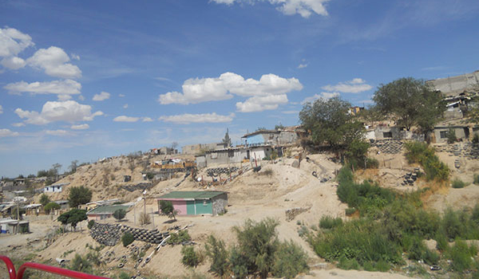
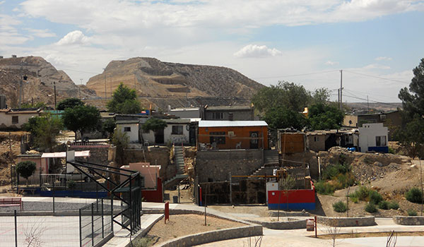
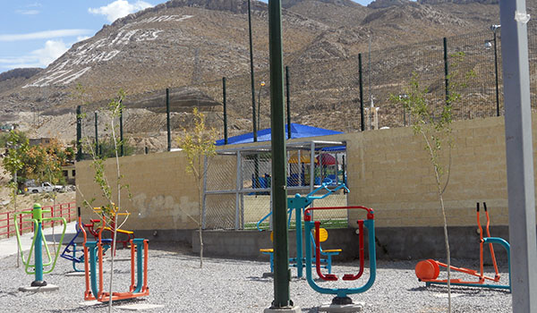
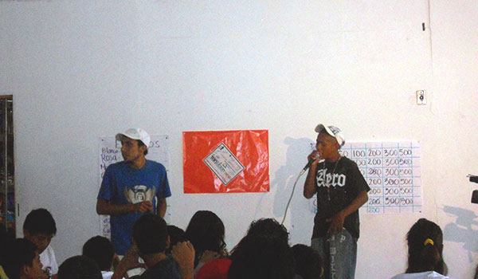
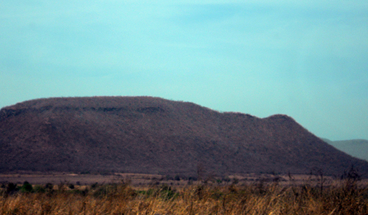
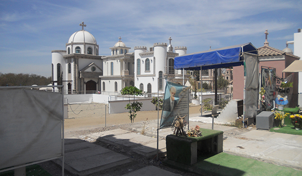
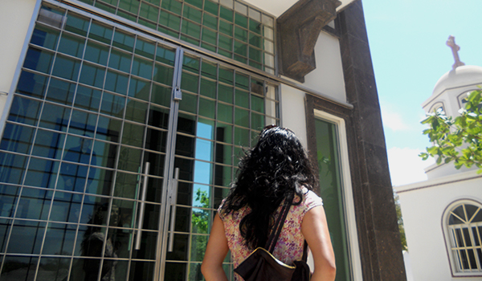
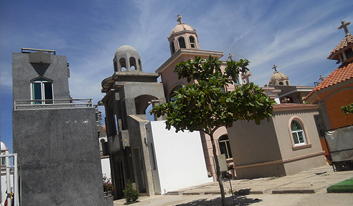
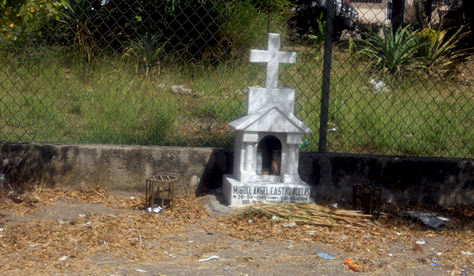
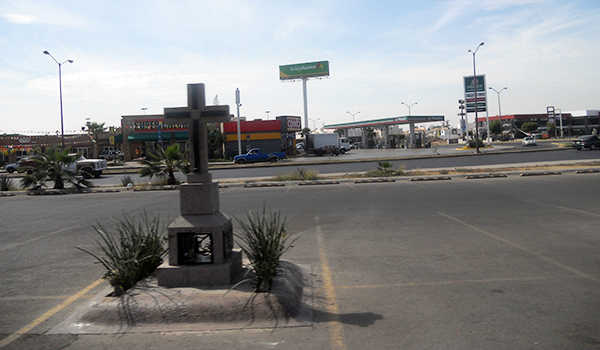
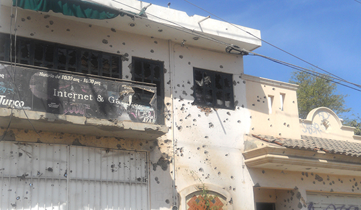
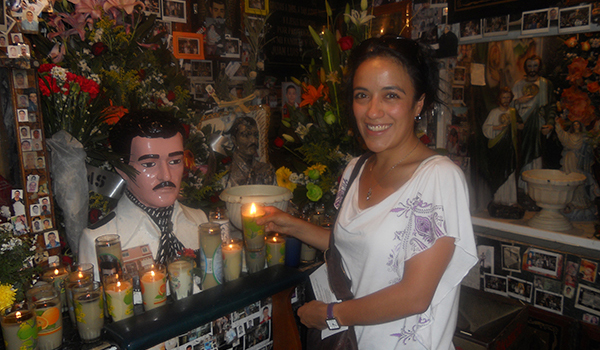
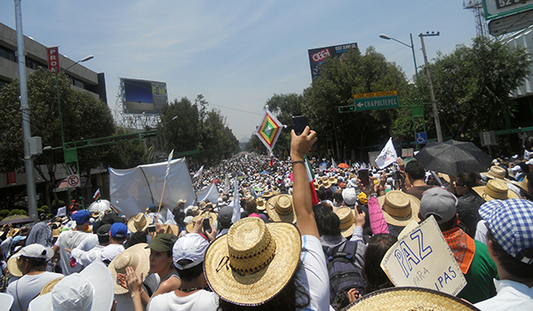
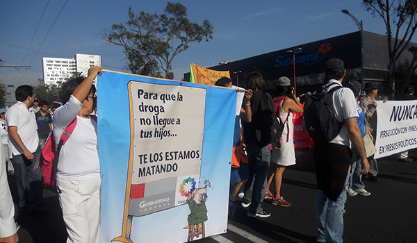
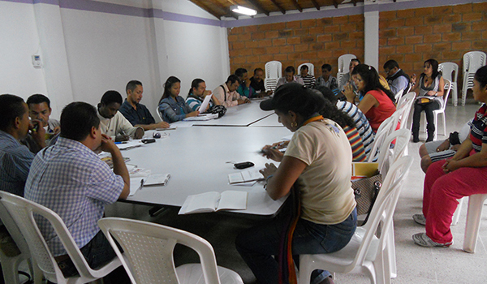
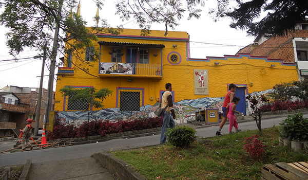
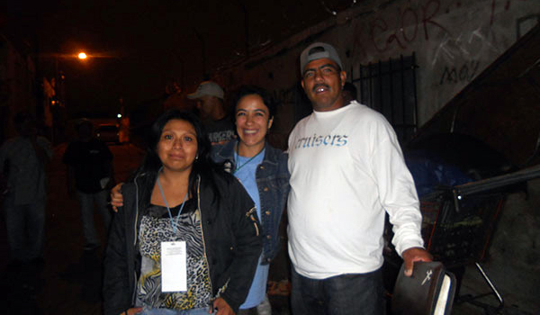
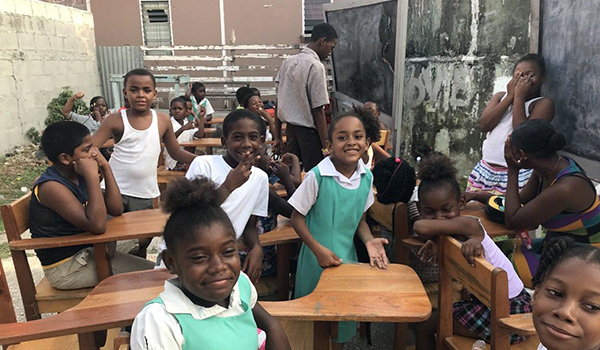
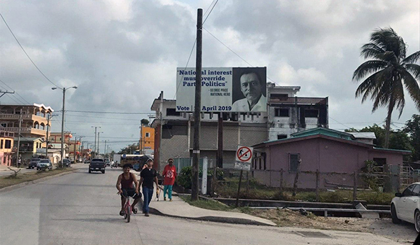
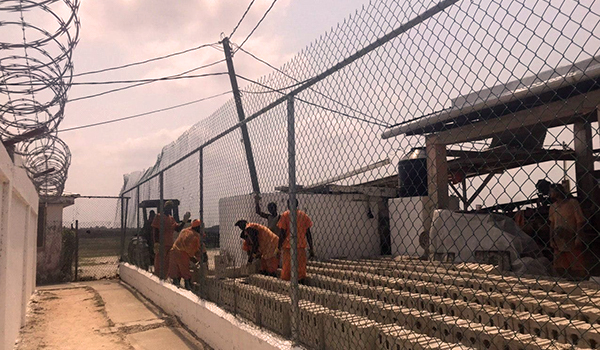